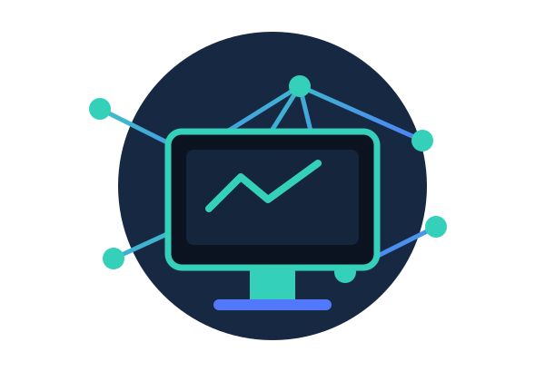

INFORMAÇÃO • INOVAÇÃO • FUTURO
O pulso da tecnologia está aqui.
As novidades que conectam você ao futuro.
Bem-vindo ao TechPulse, seu portal para acompanhar notícias, tendências e descobertas do universo tecnológico.
Explorar tecnologias
DESTAQUES
Temas em foco
Explore algumas das áreas que movimentam o mercado tecnológico.
-
Inteligência Artificial
Conheça ferramentas, aplicações e avanços da IA.
-
Desenvolvimento Web
Novidades sobre HTML, CSS, JavaScript e criação de sites.
-
Games e Hardware
Notícias sobre jogos, computadores e equipamentos.
Informação que acompanha a evolução
O TechPulse reúne conteúdos de tecnologia em uma experiência clara, acessível e adaptada a diferentes dispositivos.